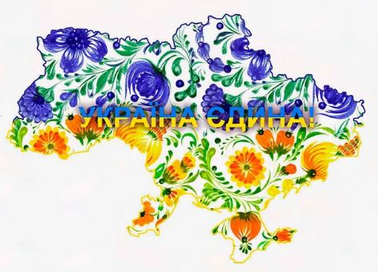

Українська культура отримає нові джерела фінансування після війни:
результати опитування УКФ

57% українських діячів культури вважають, що війна стане каталізатором для появи альтернативних джерел
фінансування культурних ініціатив. Про це свідчать результати опитування Українського культурного фонду.
Загалом, якщо комплексно оцінювати результати опитування, то можна зробити кілька важливих висновків.
Близько 49% діячів зазначили можливим наслідком втрату спеціалістів галузі культури й митців. Крім того, понад
43% із них очікують зменшення кількості робочих місць через руйнування закладів культури.